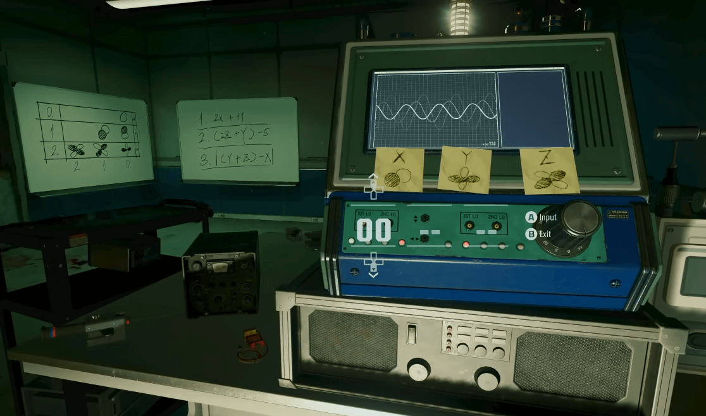
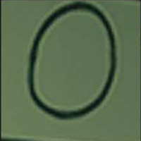
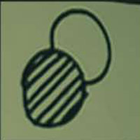
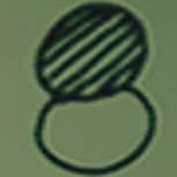
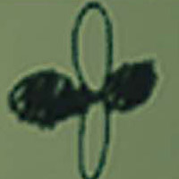

Résolution d'énigme - COD Zombies - Terminus

Vous êtes bloqué face au casse-tête mathématique de Terminus dans le mode Zombies de Black Ops 6 ? Ce calculateur gratuit et rapide est conçu pour vous aider à résoudre facilement l’énigme de la carte Terminus. Plus besoin de vous embêter avec des calculs compliqués ou de gaspiller 5000 points pour une solution ! Entrez simplement les bons symboles pour X, Y et Z, et obtenez instantanément le code de réponse. Profitez pleinement de votre partie en accédant à des objets exclusifs comme l’Arme Miracle sans interruption !
Choisissez une image pour chaque catégorie (X, Y, Z) :
Choisissez pour X




Choisissez pour Y
Choisissez pour Z
Résultats
X : -
Y : -
Z : -
Explications
Dans le mode Zombies de Black Ops 6, l'énigme de Terminus nécessite de résoudre un puzzle mathématique en utilisant les valeurs affichées sur un tableau blanc derrière le PC dans le jeu. Ce tableau présente des équations qui impliquent les variables X, Y et Z. Pour chaque variable, il y a des symboles spécifiques à sélectionner sur la carte, et ces symboles sont associés à des valeurs numériques. Voici les formules utilisées pour chaque variable :
X = (2X + 11)
Y = ((2Z + Y) - 5)
Z = |(Y + Z) - X|
Les joueurs doivent résoudre ces formules en utilisant les bonnes valeurs pour X, Y et Z. Cela peut prendre du temps, surtout lorsque vous êtes en plein milieu d'une partie !
C'est là que notre calculateur Terminus entre en jeu. Cet outil vous permet de gagner du temps en entrant simplement les symboles correspondants à X, Y et Z et en obtenant immédiatement le code de réponse. Le calculateur est responsive, ce qui signifie qu'il est parfaitement adapté pour être utilisé sur votre téléphone pendant la partie. Ainsi, vous n'avez plus à quitter le jeu pour faire les calculs : tout peut être effectué rapidement et facilement, vous permettant de rester concentré et d'économiser 5000 points.